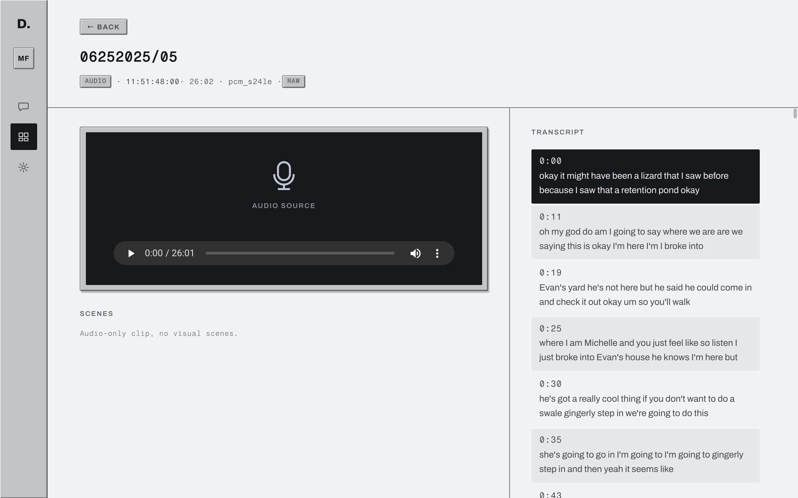
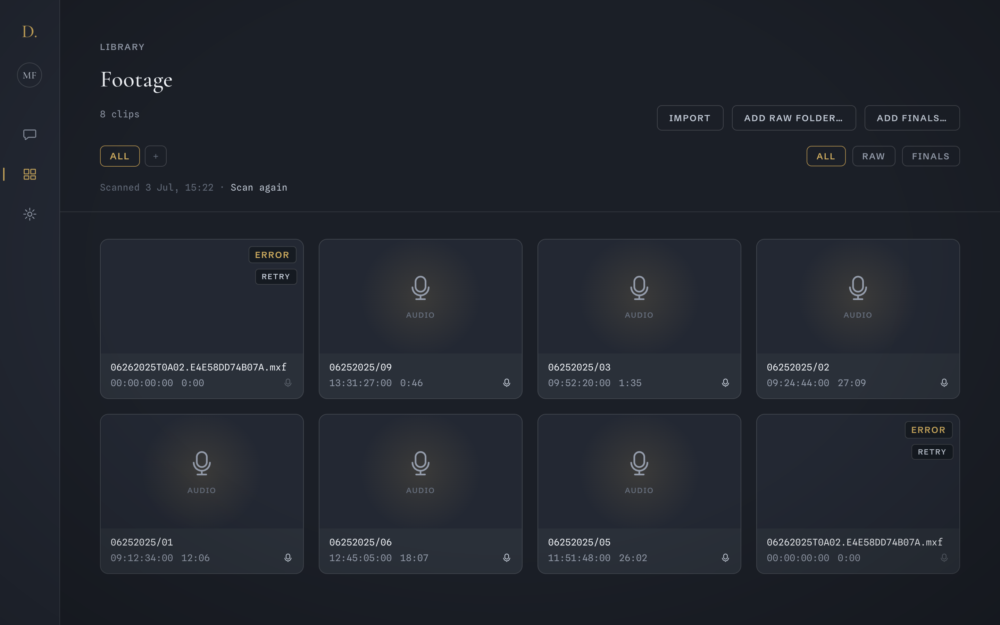

Dailies transcribes and indexes your Avid media on your own computer, in place. Ask in plain language, get the exact moment with its source timecode, and send markers or an EDL back to Media Composer.
| Clip name | Start TC | Dur | What was said |
|---|---|---|---|
| 06252025/03 | 09:52:20:00 | 1:35 | |
| 06252025/01 | 09:14:17:28 | 12:06 | "look at this we found trash" |
| 06252025/05 | 11:51:48:00 | 26:02 | |
| 06252025/01 | 09:17:18:25 | 12:06 | "oh my god we found trash you guys i didn't think we're gonna find any" |
| 06252025/02 | 09:38:36:10 | 27:09 | "I at least thought we'd find fresh trash because of all the people." |
| 06252025/09 | 13:31:27:00 | 0:46 | |
| 06252025/02 | 09:39:47:10 | 27:09 | "Yeah, it comes up through the ocean and ends up in the dunes." |
| 06252025/06 | 12:45:05:00 | 18:07 |
This table is live HTML, not a screenshot, but nothing in it is invented: the clip names, start timecodes, durations, and quotes come from a real shoot that Dailies indexed on my Mac. Timecodes are source TC at the 30 fps fallback the app labels for audio-only MXF.
Every hit opens the clip at that timecode, with the transcript synced beside the player. No exports, no relinking, no hunting.


| Stage | What happens | Runs |
|---|---|---|
| Watch | Point Dailies at any folder, including an Avid MediaFiles folder. OP-Atom MXF atoms group back into clips under their real Avid clip names. Nothing is moved or copied. | on your computer |
| Probe | Duration and source timecode for every clip. Frame accurate, drop-frame aware. | on your computer |
| Transcribe | Whisper runs locally. Apple Silicon uses Metal; Windows uses the local CPU. The engine ships inside the app, and the speech model is a one-time download. | on your computer |
| Index | Keyword and semantic indexes over every spoken line, plus imported producer notes, scripts and stringouts. | text excerpts to OpenRouter |
| Ask | Chat answers with clip cards: clip name, timecode, what was said, and a confidence dot. Click a card to land on the moment. | questions to OpenRouter |
| Export | Markers import into Media Composer as colored locators with the agent's notes. The EDL is CMX3600, ready as a selects sequence. | on your computer |
About ten minutes per hour of footage on an M-series Mac, mostly transcription. Drop a shoot day in a watched folder in the evening. It's searchable in the morning.
00:00:04:00
A friend of mine cuts reality TV. When a producer asks "where does anyone mention the bear," he scrubs through shoot days by hand. It takes him hours, every time.
00:00:19:00
That's the whole reason Dailies exists. It watches the footage folder, transcribes on your computer, and answers the question from the finished index. I hope it saves you the same hours.
Miki